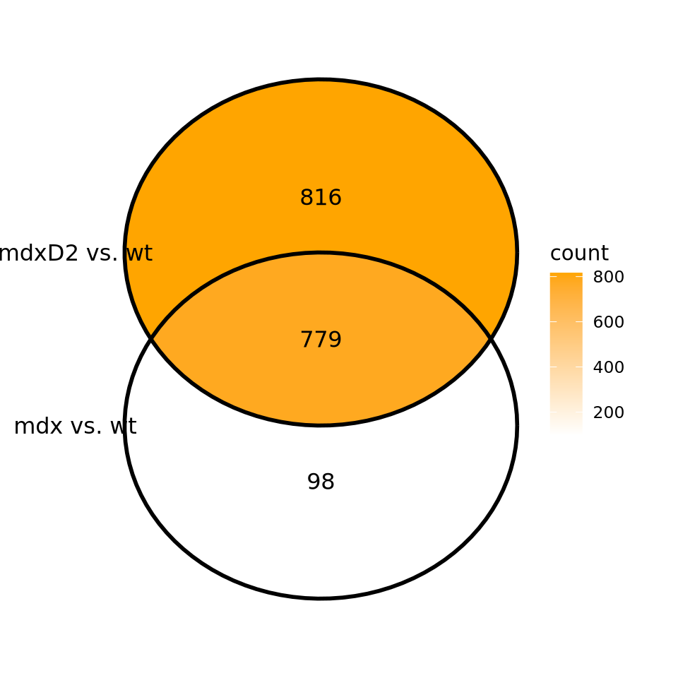
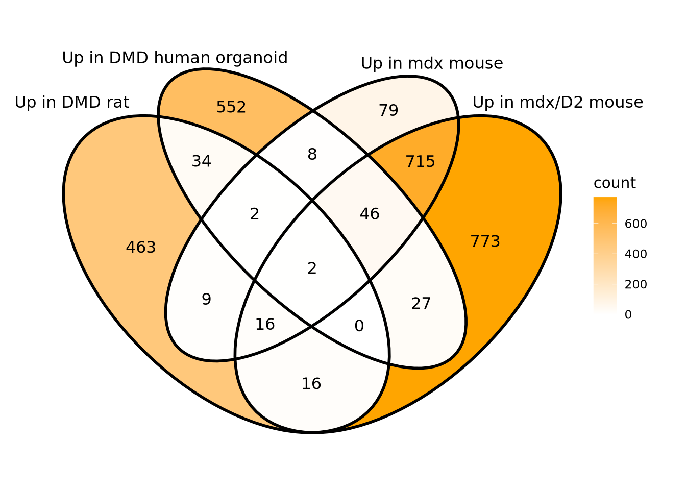

Date: 26/10/2025
Description: In this session, we’re going to intersect lists of DE genes derived from different models for DMD: mdx mouse, rat, and human organoid.
DMD_vs_WT_rat_DEGs <- read.table(file = "projects/project_2/DEG_List/DMD_vs_WT_DEGs.txt", header = TRUE)
table(DMD_vs_WT_rat_DEGs$regulation)##
## Down NotSig Up
## 378 8678 542| p_val | avg_log2FC | pct.1 | pct.2 | p_val_adj | gene | regulation |
|---|---|---|---|---|---|---|
| 0 | -5.165443 | 0.011 | 0.278 | 0 | AABR07060872.1 | Down |
| 0 | 2.393047 | 0.593 | 0.200 | 0 | Gadd45g | Up |
| 0 | 2.114949 | 0.534 | 0.118 | 0 | Fgl2 | Up |
| 0 | 2.325948 | 0.606 | 0.203 | 0 | Mgp | Up |
| 0 | 1.661093 | 0.505 | 0.141 | 0 | Ifitm1 | Up |
| 0 | 2.475440 | 0.394 | 0.074 | 0 | Lgals3 | Up |
DMD_vs_IsoCTR_organoid <- read.table("projects/project_1/DEG_List/Untreated_vs_IsoCTR_DEGs.txt", header = TRUE)
table(DMD_vs_IsoCTR_organoid$regulation)##
## Down NotSig Up
## 825 13159 671# Convert EMSEMBL IDs to gene names
library(org.Hs.eg.db)
annots <- AnnotationDbi::select(org.Hs.eg.db,
# ensembl ids in count table
keys=DMD_vs_IsoCTR_organoid$ENSEMBL,
columns=c("SYMBOL", "GENENAME"),
keytype="ENSEMBL")
# Replace missing SYMBOL with the ENSEMBL ID
annots$SYMBOL[is.na(annots$SYMBOL)] <- annots$ENSEMBL
# Collapse SYMBOL, but if >1 SYMBOL, use the ENSEMBL ID instead
annots <- annots %>%
group_by(ENSEMBL) %>%
summarise(
SYMBOL = ifelse(n_distinct(SYMBOL) == 1,
unique(SYMBOL),
ENSEMBL)
)
# Add 'SYMBOL' column to DEG table
DMD_vs_IsoCTR_organoid <- DMD_vs_IsoCTR_organoid %>% left_join(annots, by = "ENSEMBL")| ENSEMBL | baseMean | log2FoldChange | lfcSE | stat | pvalue | padj | regulation | SYMBOL |
|---|---|---|---|---|---|---|---|---|
| ENSG00000187634 | 262.6958 | 1.0967831 | 0.2692019 | 4.0742030 | 0.0000462 | 0.0004405 | Up | SAMD11 |
| ENSG00000188976 | 2060.0851 | -0.1341256 | 0.1038000 | -1.2921540 | 0.1963038 | 0.3106730 | NotSig | NOC2L |
| ENSG00000187961 | 484.3473 | 0.1117686 | 0.1247083 | 0.8962403 | 0.3701244 | 0.4908310 | NotSig | KLHL17 |
| ENSG00000188290 | 1008.3230 | -0.4960638 | 0.2778573 | -1.7853186 | 0.0742097 | 0.1552719 | NotSig | HES4 |
| ENSG00000187608 | 255.1310 | 0.2587048 | 0.4036790 | 0.6408675 | 0.5216087 | 0.6307076 | NotSig | ISG15 |
| ENSG00000188157 | 7175.7911 | 0.4956149 | 0.3370138 | 1.4706072 | 0.1413974 | 0.2460071 | NotSig | AGRN |
# Start from processed Seurat object
integrated_harmony <- readRDS("~/project_3_mdx-mdxD2-mice/integrated_harmony.rds")
library(Seurat)
mdx_vs_wt_mouse_DEGs <- FindMarkers(
assay = "RNA", slot = "data",
group.by = "condition",
ident.1 = "mdx",
ident.2 = "wt",
integrated_harmony,
only.pos = FALSE,
verbose = FALSE
)
# Classify Up/Down/Non-significant genes
mdx_vs_wt_mouse_DEGs$regulation <- ifelse(
mdx_vs_wt_mouse_DEGs$p_val_adj < 0.01 &
mdx_vs_wt_mouse_DEGs$avg_log2FC > 1, "Up",
ifelse( mdx_vs_wt_mouse_DEGs$p_val_adj < 0.01 &
mdx_vs_wt_mouse_DEGs$avg_log2FC < -1, "Down",
"NotSig")
)
table(mdx_vs_wt_mouse_DEGs$regulation)##
## Down NotSig Up
## 928 9599 877| p_val | avg_log2FC | pct.1 | pct.2 | p_val_adj | regulation | |
|---|---|---|---|---|---|---|
| Gm10260 | 0 | -7.367211 | 0.022 | 0.794 | 0 | Down |
| Gm13305 | 0 | -6.970834 | 0.013 | 0.563 | 0 | Down |
| Hbb-bs | 0 | -1.344888 | 0.402 | 0.879 | 0 | Down |
| Ifi27l2a | 0 | 2.200361 | 0.831 | 0.388 | 0 | Up |
| Gm10036 | 0 | 4.382359 | 0.423 | 0.028 | 0 | Up |
| Lyz2 | 0 | 1.905192 | 0.627 | 0.242 | 0 | Up |
mdxD2_vs_wt_mouse_DEGs <- FindMarkers(
assay = "RNA", slot = "data",
group.by = "condition",
ident.1 = "mdxD2",
ident.2 = "wt",
integrated_harmony,
only.pos = FALSE,
verbose = FALSE
)
# Classify Up/Down/Non-significant genes
mdxD2_vs_wt_mouse_DEGs$regulation <- ifelse(
mdxD2_vs_wt_mouse_DEGs$p_val_adj < 0.01 &
mdxD2_vs_wt_mouse_DEGs$avg_log2FC > 1, "Up",
ifelse( mdxD2_vs_wt_mouse_DEGs$p_val_adj < 0.01 &
mdxD2_vs_wt_mouse_DEGs$avg_log2FC < -1, "Down",
"NotSig")
)
table(mdxD2_vs_wt_mouse_DEGs$regulation)##
## Down NotSig Up
## 2613 8282 1595| p_val | avg_log2FC | pct.1 | pct.2 | p_val_adj | regulation | |
|---|---|---|---|---|---|---|
| Spp1 | 0 | 9.729202 | 0.962 | 0.014 | 0 | Up |
| Lyz2 | 0 | 2.844520 | 0.995 | 0.242 | 0 | Up |
| Ctss | 0 | 3.834287 | 0.876 | 0.147 | 0 | Up |
| Tpm3-rs7 | 0 | 5.560479 | 0.768 | 0.040 | 0 | Up |
| Fcer1g | 0 | 2.362317 | 0.832 | 0.169 | 0 | Up |
| Tyrobp | 0 | 2.496894 | 0.832 | 0.169 | 0 | Up |
library(ggVennDiagram)
library(ggplot2)
ggVennDiagram(list(
rownames(mdx_vs_wt_mouse_DEGs %>% filter(regulation=="Up")),
rownames(mdxD2_vs_wt_mouse_DEGs %>% filter(regulation=="Up"))
), label_alpha = 0,
label = "count",
category.names = c("mdx vs. wt",
"mdxD2 vs. wt")) +
scale_fill_gradient(low = "white", high = "orange") +
coord_cartesian(clip = "off") +
theme(plot.margin = margin(1, 1, 1, 1, "cm"))
# Match uppercase for all DEG sets
x <- list(
toupper((DMD_vs_WT_rat_DEGs %>% filter(regulation=="Up"))$gene),
toupper((DMD_vs_IsoCTR_organoid %>% filter(regulation=="Up"))$SYMBOL),
toupper((rownames(mdx_vs_wt_mouse_DEGs %>% filter(regulation=="Up")))),
toupper((rownames(mdxD2_vs_wt_mouse_DEGs %>% filter(regulation=="Up"))))
)
ggVennDiagram(x, label_alpha = 0,
label = "count",
category.names = c("Up in DMD rat",
"Up in DMD human organoid",
"Up in mdx mouse",
"Up in mdx/D2 mouse")) +
scale_fill_gradient(low = "white", high = "orange") +
coord_cartesian(clip = "off") +
theme(plot.margin = margin(1, 1, 1, 1, "cm"))
Names of the common genes?
# Get common gene names found in all lists
Reduce(intersect, x)## [1] "BCAT1" "LTBP2"